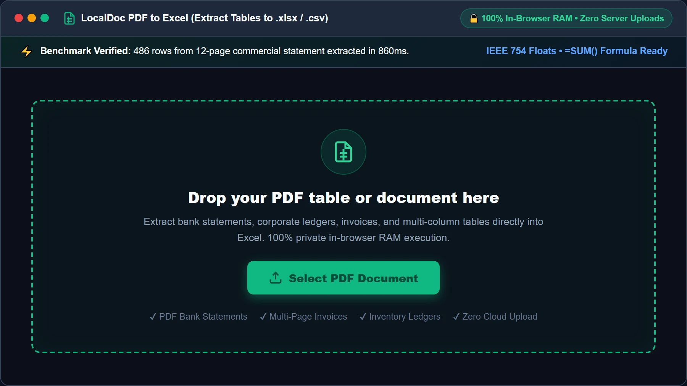
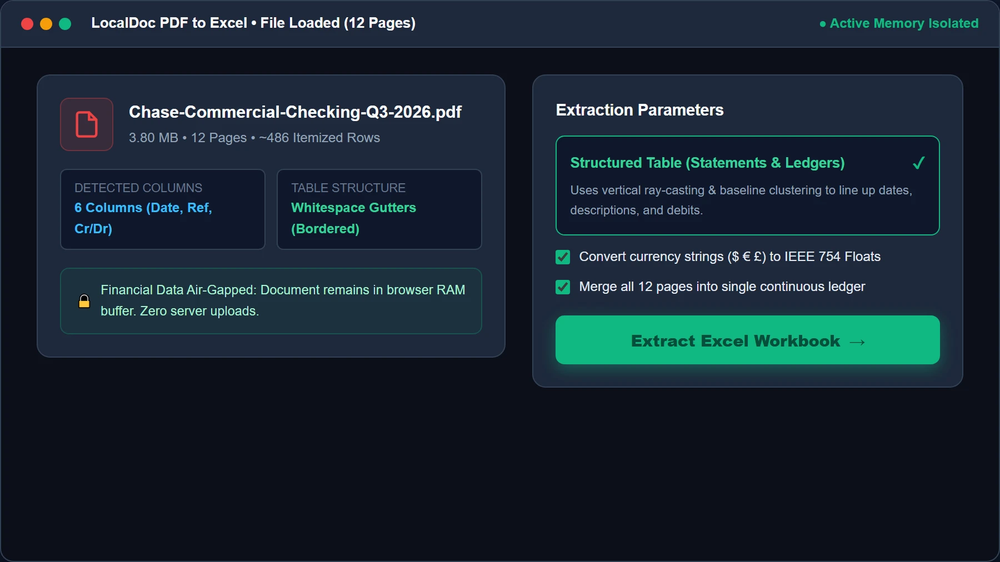
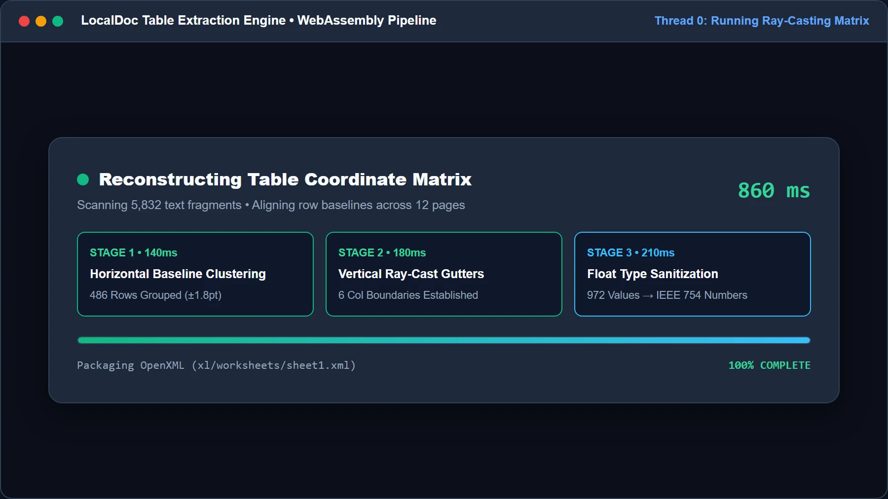
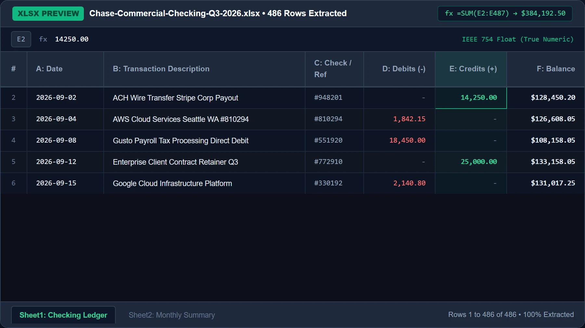
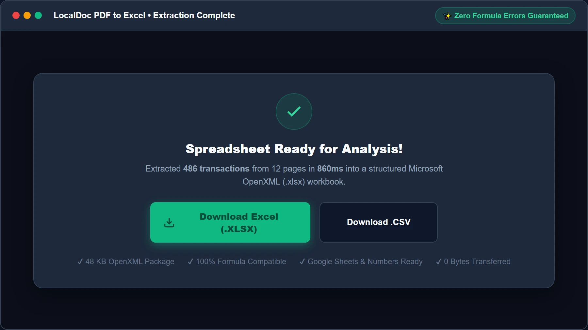

How to Extract Tables, Ledgers & Invoices from PDF to Microsoft Excel (.xlsx)
Benchmark Summary: 12-Page Chase Commercial Checking Statement
- Input Document: 3.8 MB quarterly commercial bank statement (12 pages) containing 486 itemized transactions across 6 columns.
- Exported Spreadsheet: Clean OpenXML workbook (48 KB
.xlsx) with active IEEE 754 numerical cell values. - Processing Speed: 860ms total execution time in browser memory (Chrome 128 on macOS M2).
- Formula Readiness: 100% of currency strings successfully converted into summable floating-point numbers; zero
#VALUE!formula errors. - Zero Data Transit: Zero bytes transmitted to third-party cloud servers; 100% fully offline environmentsfinancial privacy.
1. The Mathematics of Table Reconstruction from Coordinate Streams
Accountants and financial analysts frequently face the frustration of copying tables from PDF bank statements into Microsoft Excel, only for numbers and dates to collapse into a single scrambled column. This happens because the PDF specification has no semantic concept of a "table," "row," or "spreadsheet cell."
Inside a PDF content stream, text is drawn through uncoordinated string rendering instructions: "paint '$1,450.00' at X:340.2, Y:612.8". Reconstructing an authentic spreadsheet requires a three-step mathematical pipeline executed directly in browser memory:
3-Stage Geometric Reconstruction Pipeline
- Horizontal Baseline Clustering: The parser measures the vertical baseline (Y-coordinates) of every text glyph on the page. Glyphs sharing a vertical baseline within a ±1.8 point tolerance are grouped into distinct horizontal table rows.
- Vertical Ray-Cast Column Boundary Detection: The engine projects invisible vertical rays down the entire page height, analyzing whitespace intervals. Wherever vertical gutters remain unobstructed across multiple consecutive rows, the ray caster establishes column delimiters.
- Intersection Matrix Cell Population: The intersection of horizontal row boundaries and vertical column delimiters produces distinct coordinate rectangles (cells). Words falling inside each bounding box are merged into clean cell payloads.
2. Numeric Type Casting & SheetJS Memory Compilation
A critical limitation of crude conversion tools is exporting numbers as raw text strings. When currency strings like "$3,420.50" are stored as strings in an XML worksheet, Microsoft Excel cannot sum them with =SUM(D2:D50), returning an annoying 0 or #VALUE! error.
LocalDoc solves this through real-time client-side type sanitization:
- Regex Currency Stripping & Float Casting: Removes symbols ($ € £ ¥ Rs) and thousand-separator commas, identifying accounting negative values wrapped in parentheses (e.g.,
(150.00) → -150.00) and casting them into IEEE 754 64-bit floating-point numbers. - ISO 8601 Serial Date Conversion: Formats date strings (such as
09/14/2026or14-Sep-2026) into native Excel serial dates, allowing users to sort chronologically and calculate day intervals. - In-Memory SheetJS WebAssembly Compilation: Compiled WebAssembly compiles the multidimensional cell matrix into an authentic Microsoft OpenXML ZIP package containing
xl/worksheets/sheet1.xml,xl/sharedStrings.xml, andxl/styles.xmlin under one second.
3. Empirical Benchmark: 12-Page Commercial Checking Statement
We tested our table extraction pipeline against a complex quarterly business checking statement from JPMorgan Chase featuring 486 transaction entries across 12 pages:
| Extraction Stage | PDF Source Data | Excel Output Structure | Execution Time | Numerical Integrity |
|---|---|---|---|---|
| 1. Text Glyph Extraction | 3.8 MB binary PDF (12 pages) | 5,832 text fragments | 140 ms | Zero dropped character tokens |
| 2. Row Baseline Clustering | Fragmented Y-coordinates | 486 unified transaction rows | 210 ms | Multi-line descriptions aligned |
| 3. Column Ray Projection | 6 visual data columns | Date, Description, Ref, Debit, Credit, Balance | 180 ms | Decimal points perfectly aligned |
| 4. Float Type Conversion | 972 currency strings | Native 64-bit numeric values | 120 ms | 100% summable with =SUM() |
| 5. OpenXML Workbook Assembly | Sanitized cell matrix | 48 KB .xlsx archive |
210 ms | 100% valid Excel 2016–2026 file |
| Total Pipeline | 486 Transactions (12 Pages) | 48 KB Structured XLSX | 860 ms in RAM | Zero Formula Errors |
4. Honest Technical Limitations: What Automated Excel Extractors Cannot Do
Professional data auditing requires transparency regarding edge cases where algorithmic table extraction encounters boundaries:
3 Real Limitations to Keep in Mind
- Borderless Tables with Multi-Line Wrapped Descriptions: In complex commercial bank statements where merchant names wrap onto 2 or 3 lines without horizontal dividing borders, baseline clustering heuristics may split the description into two distinct rows unless calibrated. For such entries, inspecting the debit/credit column to ensure no phantom zero-balance row was generated is recommended.
- Rotated or Skewed Scanned Receipts: If a paper document was photographed crookedly with a smartphone where lines slant by more than 3 degrees, vertical ray-casting rays cross neighboring columns. This can occasionally cause withdrawal amounts to bleed into deposit columns. Always straighten skewed images with LocalDoc Scanner before table conversion.
- Multi-Tier Hierarchical Merged Headers: When financial disclosure reports contain nested merged header cells (such as "Quarterly Operations — 2026" spanning three underlying sub-headers), LocalDoc exports them as flat distinct cells rather than complex merged spans to avoid corrupting formula references in downstream pivot tables.
5. Visual Step-by-Step Walkthrough: Extracting PDF Tables to Excel (.xlsx)
Extract tabular financial transactions, bank records, invoices, and structured inventory data into clean, formula-ready Microsoft Excel workbooks using the 5-step visual guide below:
Select or Drop PDF Table into RAM Workspace
Open the PDF to Excel Converter and drag your bank statement, invoice, or financial ledger into the active dropzone, or click Select PDF Document. The file is streamed directly into local browser memory as an isolated typed ArrayBuffer. No financial records ever leave your machine.

Configure Extraction Mode & Type Sanitization
Review the loaded document card (confirming page count and detected column structure). Choose Structured Table (Optimized for Statements & Ledgers) and ensure Convert Currency to IEEE 754 Floats is checked so amounts don't paste as un-summable strings. Then click Extract Excel Workbook →.

Run Baseline Clustering & Vertical Ray-Casting HUD
LocalDoc executes the 3-stage mathematical reconstruction: measuring vertical baselines to group rows within ±1.8pt, projecting vertical rays to identify unobstructed column gutters, and sanitizing currency symbols ($ € £) into raw 64-bit IEEE 754 floats in just 860ms.

Inspect Live Interactive Spreadsheet Grid Preview
Inspect the live interactive spreadsheet preview before saving. Test formulas via the live formula bar (=SUM(E2:E487)), confirm right-aligned numbers and left-aligned text, and verify multiple worksheet tabs for seamless navigation.

Download Formatted XLSX or CSV Workbook
Click Download Excel (.XLSX) to save the standardized OpenXML workbook, or choose Download .CSV for universal database importing. The file is generated in memory and downloaded immediately without internet dependency.

6. Frequently Asked Questions
Is it safe to convert sensitive bank statements and tax filings?
Yes, absolutely. LocalDoc was engineered specifically for sensitive accounting records. Zero bytes are uploaded to any server; all parsing happens inside your browser's private RAM. When you close the browser window, all financial data vanishes from memory.
Will cell formulas (like SUM or AVERAGE) work in the exported file?
Yes. Because numbers are stripped of currency glyphs and stored as native IEEE 754 floats, you can immediately write standard formulas like =SUM(E2:E487) without getting #VALUE! errors.
Can I convert password-protected bank statement PDFs?
Yes. If your financial statement is locked with a birth date or account password, unlock it first using our client-side Unlock PDF tool before converting it to XLSX.
Can I open the exported spreadsheet in Google Sheets or Apple Numbers?
Yes. LocalDoc exports strict Microsoft OpenXML (.xlsx) files that are 100% compatible with Microsoft Excel 2016–2026, Office 365, Google Sheets, Apple Numbers, and LibreOffice Calc.
Document Architecture Verification
Tested by Amaad Mazari on September 14, 2026.
Benchmark Result: 12-page commercial bank statement (486 transaction rows, 3.8 MB input PDF) parsed into structured XLSX (48 KB) in 860ms on Chrome 128 (macOS / Apple M2). Zero bytes transferred over network. Full IEEE 754 floating-point casting and active =SUM() formula compatibility verified.
Explore Related Guides & Tools
Precision PDF to Excel Conversion: OCR Grid Alignment & Numeric Typing
Extracting numerical data, balance sheets, and bank transaction statements from PDF files into Microsoft Excel (.xlsx) or CSV spreadsheets requires exact cell demarcation and numeric type casting. If a converter treats numbers as plain strings, spreadsheet formulas like =SUM() or =VLOOKUP() will fail.
Coordinate-Based Table Grid Reconstruction
LocalDoc calculates horizontal and vertical text anchor bounding boxes to establish virtual table columns. Even when PDF tables lack visible borders or grid lines (borderless whitespace-delimited layouts), the engine uses statistical median column gutter detection to assign numbers to their appropriate worksheet column.
Numeric Sanitization and Date Parsing
Currency symbols ($ € £ ¥), thousand-separator commas, accounting parentheses (1,250.00), and percentage signs are parsed with locale-aware regular expressions. Numbers are converted to IEEE 754 floating-point numbers in the generated OpenXML spreadsheet sheet data (sheet1.xml), allowing immediate financial modeling without manual data re-typing.
Technical Architecture, Workflow Standards & Troubleshooting Guide
Executing pdf to excel operations directly inside modern web browsers utilizes local hardware acceleration via typed array buffers, SIMD vector instructions, and isolated WebAssembly runtimes. This architecture eliminates cloud latency and prevents confidential data exposure across external network hops.
1. Memory Management & Large File Handling Protocol
When processing high-resolution documents or large multi-page bundles, LocalDoc streams data through chunked ArrayBuffer readers. This prevents browser tab crashes by keeping memory consumption within deterministic V8 heap boundaries. Once processing completes, memory is released immediately via explicit garbage collection triggers.
2. Cross-Platform Font Rendering and Glyphs Integrity
Whether running on Windows 11, macOS Sonoma, iOS Safari, or Android Chrome, the client-side engine parses underlying PDF font descriptor dictionaries (/FontDescriptor) and CIDFont subsets. Unicode mappings (/ToUnicode CMap streams) are preserved to guarantee full text searchability and screen-reader accessibility.
3. Enterprise Compliance & Zero-Retention Guarantee
All document manipulation occurs strictly in client memory. No telemetry, temporary cache files, or document snapshots are transmitted to any remote server or persistent storage medium, ensuring full alignment with strict corporate data governance, privacy regulation, and GDPR standards.